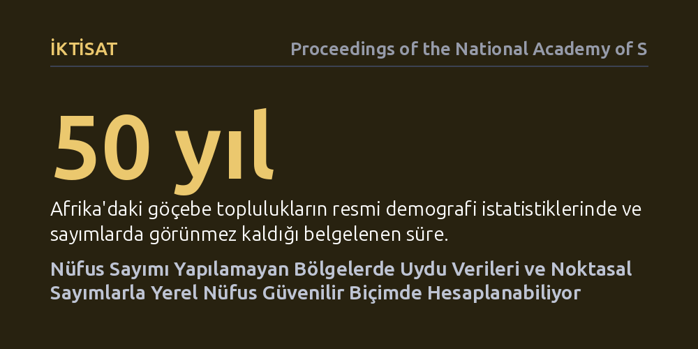

IKTISAT · Proceedings of the National Academy of Sciences · 2026-09-09
Araştırmacılar, ulusal nüfus sayımı bulunmayan bölgelerde yerel nüfusu belirlemek amacıyla uydu görüntüleri ile sınırlı saha sayımlarını birleştiren yeni istatistiksel modeller geliştirdi. Çalışma, bu yöntemin geleneksel verilerin yokluğunda dahi mahalle ölçeğindeki nüfusu ve belirsizlik aralıklarını yüksek doğrulukla hesaplayabildiğini gösterdi.
Savaş, kriz veya yoksulluk nedeniyle resmi sayım yapılamayan yerlerdeki milyonlarca insanın görünmez kalmasını önleyerek insani yardım ve kamu kaynaklarının adil dağıtılmasını sağlar.

Bir toplumda okulların nereye inşa edileceğini, salgın anında kaç doz aşı gerekeceğini ya da bir sel felaketinde kaç kişinin tahliye edilmesi gerektiğini bilmenin tek yolu sağlıklı nüfus verileridir. On yılda bir yapılan ulusal nüfus sayımları modern devletlerin planlama omurgasını oluşturur. Ancak savaşlar, siyasi istikrarsızlıklar, ekonomik krizler veya coğrafi engeller yüzünden dünyanın birçok bölgesinde resmi sayımlar ya onlarca yıldır yapılamıyor ya da hızla güncelliğini yitiriyor.
Resmi sayımın bulunmadığı bu 'veri körlüğü' durumunda, geleneksel tahmin yöntemleri tamamen çaresiz kalmaktadır. Çünkü klasik yöntemler, bilinen genel bir ülke nüfusunu alt bölgelere bölüştürme esasına dayanır. Oysa ulusal toplamın dahi bilinmediği kriz coğrafyalarında, yukarıdan aşağıya dağıtılacak güvenilir bir rakam yoktur. Sonuçta milyonlarca insan resmi kayıtlarda görünmez hale gelmekte, insani yardımlardan ve temel kamu hizmetlerinden mahrum kalmaktadır.
Araştırmacılar bu sorunu aşmak için 'aşağıdan yukarıya' (bottom-up) adını verdikleri yeni nesil bir nüfus tahmin çerçevesi kurdu. Bu yaklaşımın ilk ayağını, yüksek çözünürlüklü uydu görüntüleri oluşturuyor. Gelişmiş görüntü işleme teknikleriyle gökyüzünden binaların konumları, çatı alanları, bina tipleri ve yerleşim yoğunlukları santimetre hassasiyetinde haritalandırılıyor.
İkinci ayak ise sahadan gelen doğrudan temasla tamamlanıyor. Bütün ülkeyi kapı kapı saymak yerine, farklı yerleşim dokularını temsil eden küçük ve seçilmiş alanlarda 'mikro sayımlar' yapılıyor. Sahadaki bu kısıtlı hane halkı yoğunluğu verileri ile uydudan gelen mekânsal bina özellikleri, hiyerarşik Bayes istatistik modelleriyle birbirine bağlanıyor. Böylece model, hiç ayak basılmamış komşu mahallelerde bile binaların fiziksel özelliklerine bakarak kaç kişinin yaşadığını kestirebiliyor.
Yöntemin başarısı, Sierra Leone'nin Bo şehri gibi veri kısıtı yüksek ve zorlu sahalardaki gerçek yerleşim verileriyle sınandı. Sonuçlar, sadece yüzde birlik veya ikilik bir mikro sayım örnekleminin dahi mahalle ve yerleşim ölçeğinde şaşırtıcı derecede tutarlı nüfus tahminleri üretebildiğini gösterdi. Binaların hacmi, çatı dokusu ve çevreleyen altyapı özellikleri, yerel nüfus yoğunluğunun çok güçlü birer belirleyicisi olarak öne çıktı.
Bu çalışmanın en kritik kazanımlarından biri de tahminlerin yanına 'belirsizlik aralıklarının' eklenmiş olmasıdır. Model sadece tek bir tahmini nüfus sayısı üretmekle kalmıyor; o bölgedeki verinin eksikliğine ya da değişkenliğine göre bir alt ve üst sınır sunuyor. Bu sayede sahadaki bir yardım kuruluşu veya sağlık bakanlığı, planlama yaparken karşı karşıya olduğu belirsizlik riskini net biçimde görebiliyor.
Elde edilen bulgular, insani yardım operasyonlarının ve kalkınma programlarının çalışma biçimini temelden dönüştürme potansiyeline sahip. Mülteci kampları, afet bölgeleri ve göçebe topluluklar gibi resmi istatistiklerin dışında kalan gruplar, bu yöntem sayesinde hak ettikleri kaynaklara ve sağlık hizmetlerine hızla kavuşabilir.
Yine de yöntemin sınırlarını dürüstçe görmek gerekir. Çadırdan ibaret geçici kamplar veya sürekli yer değiştiren göçebe nüfuslar, fiziksel bina varlığına dayanan bu modellerden kolayca kaçabilmektedir. Dolayısıyla bu uzamsal tahminler ulusal nüfus sayımlarının eksiksiz bir ikamesi değil; sayımın mümkün olmadığı kriz anlarında hayat kurtaran, yokluğu telafi edilemez bir köprüdür.